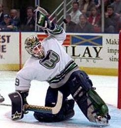

File:Jason Muzzatti.JPG
Jump to navigation
Jump to search


No higher resolution available.
Jason_Muzzatti.JPG (246 × 259 pixels, file size: 16 KB, MIME type: image/jpeg)
Captions
Add a one-line explanation of what this file represents
Captions
Summary[edit]
{kind=link}
Hartford Whalers goaltender Jason "The Fighting Scorpion" Muzzatti
Licensing[edit]
{kind=link}

|
Permission is granted to copy, distribute and/or modify this document under the terms of the GNU Free Documentation License, Version 1.2 or any later version published by the Free Software Foundation; with no Invariant Sections, no Front-Cover Texts, and no Back-Cover Texts. A copy of the license is included in the section entitled GNU Free Documentation License. |
| This file is licensed under the Creative Commons Attribution-Share Alike 3.0 Unported license. | ||
| ||
| This licensing tag was added to this file as part of the GFDL licensing update. |
File history
Click on a date/time to view the file as it appeared at that time.
| Date/Time | Thumbnail | Dimensions | User | Comment | |
|---|---|---|---|---|---|
| current | 13:22, 23 May 2006 |  | 246 × 259 (16 KB) | Captain59~commonswiki (talk | contribs) | Hartford Whalers goaltender Jason "The Fighting Scorpion" Muzzatti |
You cannot overwrite this file.
File usage on Commons
There are no pages that use this file.
File usage on other wikis
The following other wikis use this file:
- Usage on arz.wikipedia.org
- Usage on cs.wikipedia.org
- Usage on de.wikipedia.org
- Usage on en.wikipedia.org
- Usage on fi.wikipedia.org
- Usage on fr.wikipedia.org
- Usage on hr.wikipedia.org
- Usage on it.wikipedia.org
- Usage on no.wikipedia.org
- Usage on sk.wikipedia.org
- Usage on sv.wikipedia.org
- Usage on tr.wikipedia.org
- Usage on www.wikidata.org
{kind=link}